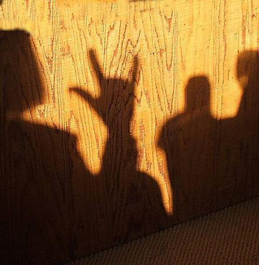

Paul Hostovsky
Deaf Culture 101

In the deaf world, deaf
is good. That’s the premise
that sets the deaf world apart.
So when the audiologist says
to two deaf parents:
“I’m sorry, your baby
is profoundly deaf,” they do not
weep or mourn or
blame themselves or
God. They rejoice.
They embrace each other and even
the confused audiologist who
was the bearer of great
tidings. Healthy deaf babies
are good, the more the better!
Deaf brothers, deaf sisters,
deaf mothers and fathers
confer considerable status
in the deaf world. Ninety
percent of all deaf people
are born to families who hear —
poor, benighted, hearing families
who have never heard of the deaf world.
That’s why deaf families
are a kind of aristocracy
where deaf is the currency.
Deaf grandmothers and grandfathers,
deaf aunts and uncles,
deaf nieces and nephews and cousins and more
deaf cousins. There are even
some who are fourth or fifth
or sixth generation deaf.
These are the deaf royalty.
Sometimes you can see them
surrounded by dilating circles
of envious, awestruck, deaf eyes
just listening to the old stories
told in elegant, flowing ASL —
stories of vast family trees
hearkening all the way back to the first
deaf community on Martha’s Vineyard,
or back to the first school for the deaf
in Paris, France — to Laurent Clerc, and his teacher
Jean Massieu, and his teacher
the Abbe Sicard, who wasn’t deaf himself,
but who nearly lost his head
when the heads of the French aristocracy
and clergy began to roll in the streets.
But he didn’t lose his head, and it was only
because the deaf of Paris loved him
enough to write a letter
to the Jacobins on his behalf,
in elegant, flowing, flawless French,
calling him their Father and their Teacher,
and winning his release.
Greenhouse
My Aunt Ellie lived in a green-
house. This was in Irvington
New Jersey. A Jew alone
is a Jew in danger, her husband
said. Their daughter, my cousin,
wanted to go where she wanted
to go. They said it was a big
mistake. In a greenhouse you
cultivate certain delicate
non-indigenous plants. The house
was green and my cousin fell
deeply in love with a black man.
When she married him her father
sat shiva for her, meaning that
he mourned her for dead. But
she was only living over in East
Orange. She had two beautiful
daughters, who never knew
their grandfather on their mother’s
side. Because she was dead to him
until the day he died. That was the day
we all went over to Aunt Ellie’s house
where she was sitting shiva. We met
my cousin’s husband Toe, for the first time,
and their two daughters, Leah and Aleesha.
And we opened all the windows in
the greenhouse on that day, for outside
it was a beautiful spring day and we
broke out the expensive delicate china
from Germany which they kept locked up
in a glass breakfront in the hall.
My Country Isn’t
My country isn’t
my country because
I’m not myself.
I haven’t been myself since
I don’t know when.
My mother said
just be yourself.
My father was
himself all his life
and everyone loved him.
But I loved
the smell of the rain
before the rain
more than the rain itself.
And I lived
in the country of
myself all my life.
The food was bad.
The language odd.
The peace unsteady.
So I moved
to the country of
I’m not myself.
To the country of
I don’t know who
and I don’t know what
I am. And I am
finally home.
There always was
that side of me.
That is the side
that I am on.
I love my country.
I will die for my country.
But my country isn’t
my country and I am
not myself.
Pigeon Lady
“For me they are like the tide,”
says the pigeon lady. And the thought
that she’s keeping one inside
comes to me. A rainbow-necked, red-eyed,
pinioned pigeon weeps in her throat.
“For me they are like the tide –
a thousand times I’ve tried
to wet my fingers, to touch.
But retreating, they keep inside
each other’s little struts, they nod
and float away, nod and float
away. For me they are like the tide.”
Behind her drizzling side-
long frowns and crumbs the sun is out.
The one she’s keeping inside
like a feather lodged, or tied
in her blue-gray hair, it’s there. It can’t hide.
“For me they are like the tide.”
Cheeping, one’s inside.
The Canes
After the accident, he walked with a cane
for several months. And he began to notice
the other people with canes, and to feel
a kinship with them, a strong identification
when he saw one crossing a street or waiting
for the train, the bus, the elevator — a desire
to speak to them in the language of the cane,
the language of the country of the cane,
which no one else seemed to know existed,
which he never knew existed himself until
now. But he didn’t know what to say to them,
because he didn’t know them. He only knew
what they knew. So he didn’t say anything
directly. But instead he said things to himself
in the language that was in him. And his thoughts
grew wider, as though the white canes of the blind
were clearing the way — click, sweep, click –
a separate way through the darkness home.
Paul Hostovsky’s work appears widely online and in print. He has been featured on Poetry Daily, Verse Daily, and the Writer’s Almanac, and he has new poems appearing or forthcoming in Karamu, Slant, Eclipse, Rock & Sling and others. He works in Boston as a sign language interpreter.
|